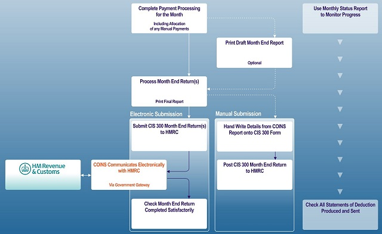

The Month-End Process
Contractors must submit a monthly return to HMRC showing what has been paid and deducted in the month. This must be submitted no more than 14 days after the end of the tax month to which it relates.
See sections 1.10 and 4.2-4.12 of CIS 340.
Diagram

 View high-resolution PDF diagram
View high-resolution PDF diagram
The month-end procedure is as follows
- Optionally run the Monthly Status Report to see if you are ready to run the month-end process. You can re-run the report at any stage. See Monthly Status Report.
- Optionally print a draft Month End Report and correct any inaccuracies.
- Run Process Month End Return. See Processing Returns.
generates the records for the data that will be submitted.
- Optionally run the Month End Report. This shows the details that will be submitted. You can use this to show the details you need if you are filling in the paper return.
- To submit the return, use Monthly Return Submissions.
generates the XML file and submits it to the Government Gateway. See Electronic Submission.
Alternatively you can submit the return manually. See Manual Submission.
- Notify HMRC of any negative submissions as these are excluded from the CIS 300 (see Negative Returns).
- Produce the statements of deduction if you are issuing these on a monthly basis (see Monthly Statements of Deduction). Otherwise you must issue subcontractors with a per-payment statement.
You can produce the month-end statements before or after submitting the return.